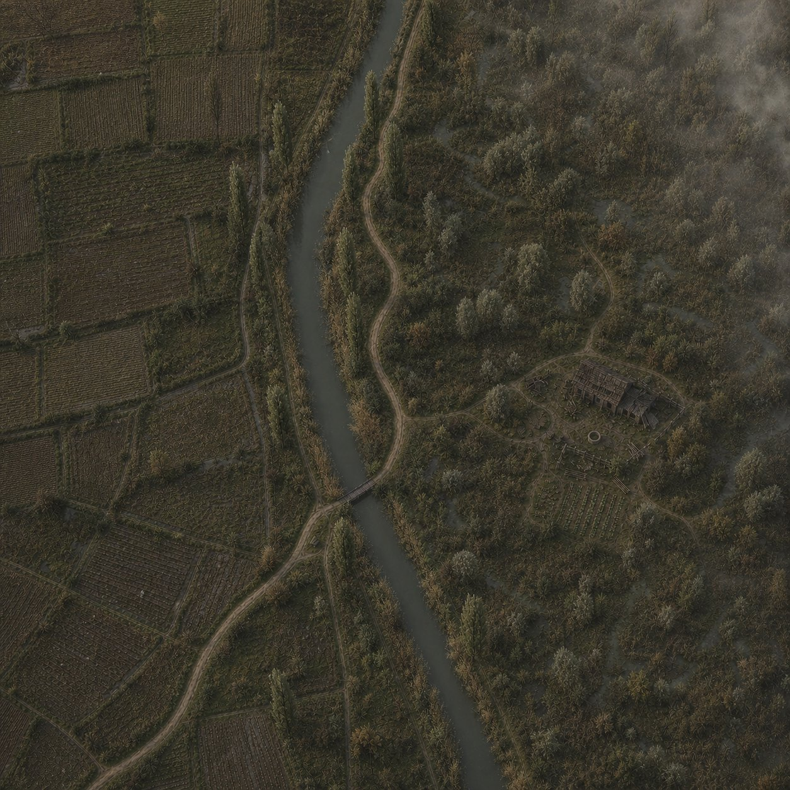
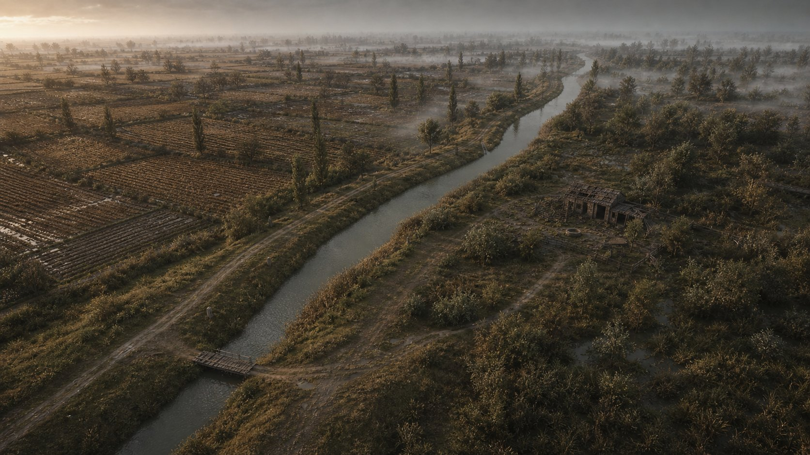

Una direttrice, spazi per esplorare
Si esce a est del villaggio, si risale l’argine accanto al mulino, si raggiunge il cippo e si attraversa il canale. Oltre il ponte il sentiero orienta verso nord; un ramo facoltativo porta alla corte e torna allo stesso bivio. Acqua bassa, vegetazione e foschia introducono il futuro bosco palustre.
Clicca un punto per aprire i dettagli. Da tastiera: Tab, poi Invio o Spazio; Esc per chiudere.
Relazioni fisse
- Mulino, canale largo 6 m e uscita est mantengono posizione e ingombri.
- Cippo e riserva Beatrice prima del ponte; E01 sulla sponda opposta. Nessun mostro nel villaggio o nella tasca iniziale.
- Cascina facoltativa, ingresso da sud e rientro allo stesso bivio.
- Il percorso continua fino al raccordo locale (163; 230). Il bosco C è esterno a questa consegna.
Pianta metrica ricostruita dai dati locali: verde/giallo = Piantaggine/Achillea, rosso = riserve e linee incontri. L’asse LD rappresenta il layout; ai raccordi puntuali prevalgono le superfici della mappa salvata e il CSV dei segmenti costruiti.

Quote e aperture utili
Percorsi e attraversamento
Asse LD principale circa 263,87 m. Nel raccordo cippo la fascia costruita è 2,50 m, subito oltre il ponte 2,40 m, nel tratto nord 3 m. Il ramo cascina è lungo 47,13 m, con fascia costruita 2,80 m.
Ponte 15 × 3 m, piano a quota locale +0,55 m, spessore 24 cm. Due sbarchi 1,80 × 3 m e parapetti 1,10 m sul piano. Conservare i sostegni senza introdurre scalini o restringimenti.
Radura tutorial: riserva circa 12 × 14 m, centro (140; 91). La precedente tasca 10 × 12 m prima del ponte resta disponibile per sosta/esplorazione.
La cascina
Corte 28 × 24 m, casa con assi nominali 9 × 6 m, pareti spesse 22 cm e alte 2,20 m. Ingresso sud con luce 1,60 m e altezza libera circa 2 m; interno e soglia devono restare accessibili.
Il tetto costruito riusa la geometria del villaggio: inviluppo 9,80 × 6,80 × 1,35 m; sommità circa 3,52 m dal riferimento del pavimento. I 9 × 6 m sono le dimensioni nominali del corpo, non il limite esterno del tetto.
Tettoia: inviluppo nominale 5 × 4 m, copertura superstite 3 × 4 m, pali alti 2,25 m. Pozzo: anello 1,50 × 1,50 × 0,85 m.
UE cm = (locale m + [57.376, 254.7, −98.961]) × 100. La mappa di lavoro è /Game/Developers/Roberto/Greybox_WTFD/Maps/L_Greybox_Master. Le quote seguono il terreno attuale; usare la mappa per contatti, pivot e collisioni puntuali.Elementi da sostituire con gli asset finali
Le misure costruite e gli spazi utili guidano il kit. L’inviluppo nominale della tettoia, le forme delle masse vegetali e le posizioni indicative dei dettagli lasciano libertà entro i percorsi e le riserve della mappa.
B-01 · Argine e percorso principaleCirca 264 m di asse LD; fasce locali 2,5 / 2,4 / 3 m
Posizione: Uscita est → cippo → ponte → raccordo C
Vincoli: Suolo continuo, margini percorribili e movimento laterale; conservare mulino e canale esistenti.
Libertà artistiche: Terra battuta, fango e transizioni variate; il sentiero orienta senza chiudere l’esplorazione.
B-02 · Ponte ligneo e sbarchiPiano 15 × 3 m; top locale +0,55 m; spessore 0,24 m
Posizione: Centro (122,4931; 75)
Vincoli: Due sbarchi 1,8 × 3 m; parapetti alti 1,10 m sul piano; continuità del cammino.
Libertà artistiche: Pali, correnti, tavolato e sostegni credibili; conservare luce di passaggio e quote.
B-03 · Cippo e tasca di riposoCippo alto 0,90 m; tasca circa 10 × 12 m
Posizione: Cippo (114,7782; 63), prima del ponte
Vincoli: Usare il modello C approvato; spazio senza mostri prima del ponte. Il cippo resta un elemento statico nella mappa attuale.
Libertà artistiche: Usura e materiali coerenti con la reference approvata; nessun simbolo nuovo.
B-04 · Radura tutorialRiserva libera circa 12 × 14 m
Posizione: Centro (140; 91), oltre il ponte
Vincoli: Conservare spazio per E01 e alternative laterali; evitare una recinzione intorno all’incontro.
Libertà artistiche: Margini di vegetazione e fango senza ostacoli che impongano un solo passaggio.
B-05 · Deviazione cascina47,13 m di asse, 2,80 m di fascia costruita
Posizione: Da (131,5846; 105) a (172; 125)
Vincoli: Un ramo facoltativo con ritorno allo stesso bivio; accesso alla corte riconoscibile.
Libertà artistiche: Raccordare il fondo al terreno, evitando scalini o detriti sulla via d’accesso.
B-06 · Corte28 × 24 m
Posizione: X 156–184 / Y 109–133
Vincoli: Conservare accessi a casa, pozzo e tettoia; nessuna barriera nel centro della corte.
Libertà artistiche: Disordine rurale locale, suolo e vegetazione variati senza riempire gli spazi di manovra.
B-07 · Cascina apertaCorpo nominale 9 × 6 m; pareti 0,22 m; altezza pareti 2,20 m
Posizione: Centro (172; 130), ingresso sud
Vincoli: Varco 1,60 m, luce verticale circa 2 m. Tetto riusato 9,80 × 6,80 × 1,35 m, sommità circa 3,52 m dal riferimento del pavimento.
Libertà artistiche: Conservare impronta, falde e soglia; differenziare superfici e usura mantenendo l’interno accessibile.
B-08 · Tettoia parzialmente crollataInviluppo nominale 5 × 4 m; copertura superstite 3 × 4 m; pali alti 2,25 m
Posizione: Centro indicativo (179; 128)
Vincoli: Tre pali, trave e elemento caduto laterale; passaggio sotto/accanto libero.
Libertà artistiche: Rendere leggibile il crollo con pezzi limitati; conservare il vuoto utile.
B-09 · PozzoAnello 1,50 × 1,50 × 0,85 m; supporti alti 1,85 m
Posizione: (163; 114)
Vincoli: Anello e sostegni solidi, spazio pedonale continuo attorno; traversa 1,90 m.
Libertà artistiche: Muratura e carpenteria rurali; componenti minuti compatibili con l’ingombro.
B-10 · Props della cascina e riserve S12Tre casse circa 0,80 × 0,70 × 0,65 m; paglia 1,80 × 1,40 × 0,50 m
Posizione: Bambola (165; 115); segno presso la soglia sud
Vincoli: Bambola e segno sono riserve statiche. La grafica del segno deve derivare dalle indicazioni narrative definitive.
Libertà artistiche: Materiali e usura liberi entro ingombri e percorsi; evitare di attribuire nuovi significati narrativi.
B-11 · Soglia umida e acqua bassaSuperficie d’acqua 16 × 10 m; 75 sagome di giunchi
Posizione: Acqua centrata (175; 193)
Vincoli: Acqua visiva su terreno continuo, senza scavo; fascia asciutta e alternative attorno ad Animi.
Libertà artistiche: Margini organici, giunchi variati e transizioni fango/erba; conservare le aperture.
B-12 · Alberi e sottobosco58 alberi/pioppi e 99 arbusti bassi aggiunti alla zona
Posizione: Distribuzione dalla mappa
Vincoli: Tronchi fuori dai passaggi; sottobosco basso senza collisione. I cap vegetali ai margini sono temporanei.
Libertà artistiche: Diversificare chiome e volumi mantenendo visibilità di cascina, bivio e accessi.
B-13 · Erbe raccoglibili76 nodi: 50 Piantaggine, 26 Achillea
Posizione: Coordinate stabili nel CSV raccolte
Vincoli: Ogni nodo accessibile da terra; niente acqua aperta, carreggiate, muri o edifici. Non confonderle con arbusti decorativi.
Libertà artistiche: Riutilizzare i modelli approvati, rispettando habitat e leggibilità: piantaggine bruno/avorio, achillea gialla.
B-14 · Riserve incontri5 spazi, 6 proxy: 3 Stragoulè, 2 Bìnn, 1 Animi
Posizione: E01–E05 come in pianta e CSV
Vincoli: Conservare spazi e linee di pattuglia; solo Animi può restare sospeso sull’acqua. Mazapégul e Lécora sono riservati ai miniboss.
Libertà artistiche: Vegetazione e nebbia devono lasciare riconoscibili minacce e vie di risposta.
B-15 · Raccordo nordAsse fino a (163; 230), margine temporaneo a Y circa 238
Posizione: Verso il futuro bosco palustre C
Vincoli: Conservare quota e direzione del collegamento; le siepi di chiusura non sono un ostacolo definitivo.
Libertà artistiche: Preparare una transizione progressiva verso vegetazione palustre più fitta.
Minacce leggibili, raccolte accessibili
| ID | Composizione | Inizio locale (X; Y) m | Linea di riferimento |
|---|---|---|---|
| E01 | Stragoulè | (136, 86) | 6 m avanti/indietro |
| E02 | Stragoulè | (142, 144) | 4 m avanti/indietro |
| E03 | Stragoulè + Bìnn d’la Borda | (181, 140) / (185, 142) | 4 m avanti/indietro |
| E04 | Animi d’la Paluda | (173, 193) | 4 m avanti/indietro |
| E05 | Bìnn d’la Borda | (168, 220) | 4 m avanti/indietro |
Le linee rappresentano lo spazio occupato dai proxy di prova. Non determinano tempi, difficoltà o comportamento finale del combattimento. Mazapégul e Lécora restano riservati ai miniboss.
Raccolte
50 Piantaggine e 26 Achillea, 76 nodi identificati R01–R76. Conservare posizione, habitat e accesso da terra; evitare piante dentro carreggiate, acqua aperta, edifici o spazi irraggiungibili.
Piantaggine bruno/avorio e achillea gialla seguono i modelli approvati per leggibilità. Il sottobosco decorativo deve rimanere distinguibile dalle piante raccoglibili. Il CSV conserva le coordinate di ogni nodo.
Ambiente e lettura
Gli alberi guidano lo sguardo senza recintare ogni incontro. Le aperture verso cascina, bivio, ponte e vie laterali restano riconoscibili. L’acqua bassa è laterale al percorso e poggia sul terreno solido continuo.
La foschia cresce oltre il villaggio e verso nord; mantenere una progressione graduale. I valori del controllo di prova non fissano una distanza finale di avvistamento.
La consegna riguarda l’ambiente e le predisposizioni spaziali. I proxy dei nemici, le loro label e le scie sono strumenti di sviluppo. Combat/AI, dialoghi, salvataggio al cippo e indizi interattivi richiedono i rispettivi sistemi; il feedback di raccolta non definisce ricette o bilanciamento.
Relazioni e atmosfera


Le due immagini originali del piano sono conservate come fonti: layout iniziale e contesto del livello. Le diciture preliminari nelle immagini non sostituiscono questa consegna. Provenienza dei riferimenti.


File per il lavoro
La geometria esatta e le dipendenze rimangono nel progetto Unreal. Per lavorare in un altro progetto trasferire gli asset con le loro dipendenze, usando Migrate o il progetto completo. HTML, immagini e CSV non costituiscono un progetto Unreal autonomo.